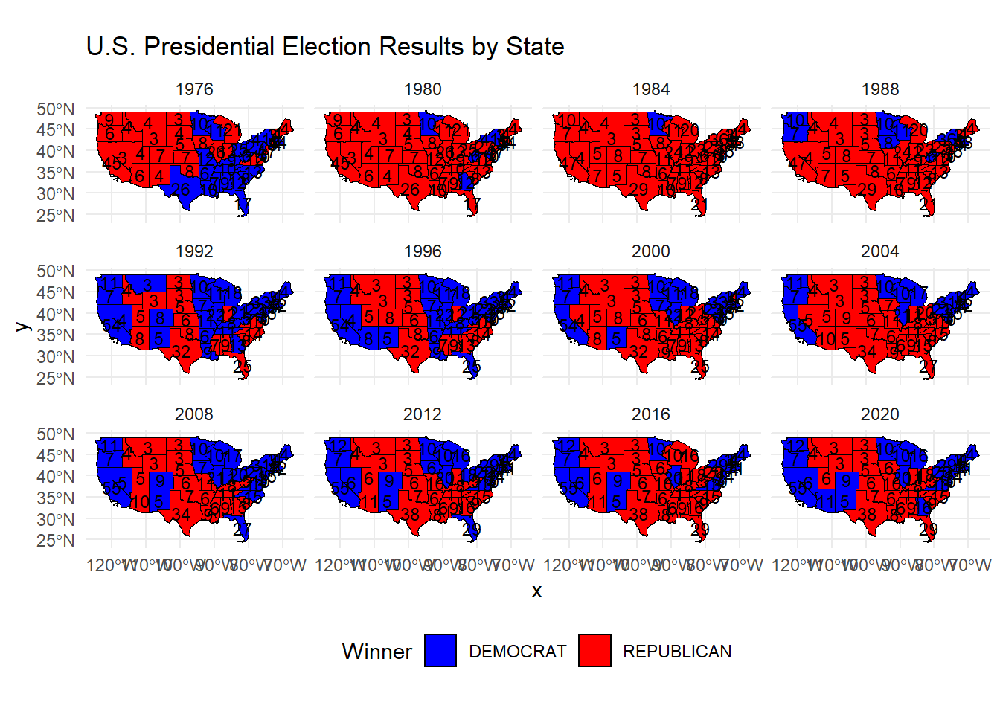

The objective of this analysis is to identify trends, patterns and other factors that contribute to the fairness of an Election. While there are many factors that contribute to a fair and equal election, being able to investigate different type of election methods allows us to make our own conclusion.
This project will attempt to identify different methods for an election using government data. This data will allow us to use quantifiable past voter’s past selection without having to survey a large population. Ideally, the result will be to feel content with the current system or propose a new voting method.
2. Data Sources
We had to download four different sets of data for this analysis.
Data 1a - House Election 1976 - 2022:
House Election 1976 - 2022
#this code assumes you have hand downloaded from https://dataverse.harvard.edu/dataset.xhtml?persistentId=doi:10.7910/DVN/IG0UN2 house_of_reps <-read.csv("C:/Users/velas/OneDrive/Documents/STA9750-2024-FALL/1976-2022-house.csv")
Data 1b - Presidential Election 1976 - 2022:
Presidential Election 1976 - 2022
#this code assumes you have hand downloaded from https://dataverse.harvard.edu/dataset.xhtml?persistentId=doi:10.7910/DVN/42MVDX presidents <-read.csv("C:/Users/velas/OneDrive/Documents/STA9750-2024-FALL/1976-2020-president.csv")
Data 2 - Congressional Shapefiles 1976-2012:
Congressional Boundaries 1976-2012
library(httr)library(sf)library(dplyr)library(utils)# url and string for filebase_url <-"https://cdmaps.polisci.ucla.edu/shp/"file_names <-sprintf("districts%03d.zip", 1:114) # Generates file names from districts001.zip to districts114.zip# temp directorydownload_dir <-"congressional_shapefiles"if (!dir.exists(download_dir)) dir.create(download_dir)# download & unzip download_and_load_shapefile <-function(file_name, sample_fraction =0.1) { # Add sample_fraction parameter local_zip_path <-file.path(download_dir, file_name) url <-paste0(base_url, file_name)# checking if already downloadedif (!file.exists(local_zip_path)) {#cat("Downloading", file_name, "...\n")GET(url, write_disk(local_zip_path, overwrite =TRUE)) } else {#cat(file_name, "already exists, skipping download.\n") }# Unzip and load the shapefile unzip_dir <-file.path(download_dir, sub(".zip$", "", file_name)) # Unzipped folderif (!dir.exists(unzip_dir)) {unzip(local_zip_path, exdir = unzip_dir) }# load the .shp file district_shapes_dir <-file.path(unzip_dir, "districtShapes") shp_file <-list.files(district_shapes_dir, pattern ="\\.shp$", full.names =TRUE)if (length(shp_file) >0) { shapefile_data <-st_read(shp_file, quiet =TRUE)# Sub-sample the shapefile data (e.g., take 10% of rows) shapefile_data <- shapefile_data %>%sample_frac(sample_fraction)return(shapefile_data) } else {#message("No shapefile found in 'districtShapes' for", file_name)#return(NULL) }}# Loop through and process the shapefiles with sub-samplingshapefiles_list <-list()for (file_name in file_names) { shapefile_data <-download_and_load_shapefile(file_name, sample_fraction =0.1) # 10% sampleif (!is.null(shapefile_data)) { shapefiles_list[[file_name]] <- shapefile_data }}
Data 3 - Congressional Shapefiles 2014-Present:
Congressional Boundaries 2014-Present
# url and string for file base_url <-"https://www2.census.gov/geo/tiger/TIGER2024/CD/" file_names <-sprintf("tl_2024_%02d_cd119.zip", 1:78) # temp directpry download_dir <-"census_shapefiles"if (!dir.exists(download_dir)) dir.create(download_dir)# Unzip and load the shapefile download_and_load_shapefile <-function(file_name, sample_fraction =0.1) { local_zip_path <-file.path(download_dir, file_name) url <-paste0(base_url, file_name)# Check if file already exists to avoid re-downloadingif (!file.exists(local_zip_path)) {#cat("Downloading", file_name, "...\n")GET(url, write_disk(local_zip_path, overwrite =TRUE)) } else {#cat(file_name, "already exists, skipping download.\n") }# Unzip and load the shapefile unzip_dir <-file.path(download_dir, sub(".zip$", "", file_name)) # Unzipped folderif (!dir.exists(unzip_dir)) {unzip(local_zip_path, exdir = unzip_dir) }# Load the .shp file from the unzipped directory shp_file <-list.files(unzip_dir, pattern ="\\.shp$", full.names =TRUE)if (length(shp_file) >0) { census_data <-st_read(shp_file, quiet =TRUE)return(census_data) } else {#message("No shapefile found in unzipped directory for", file_name)#return(NULL) } }# Loop through each file name, download, and load the shapefile if necessary census_shapefiles <-list()for (file_name in file_names) { census_data <-download_and_load_shapefile(file_name)if (!is.null(census_data)) { census_shapefiles[[file_name]] <- census_data } }
The data 1 sources allows us to take a peek into historical election data for house of representations and presidential races. Additionally, data 2 & 3 show us voting boundaries via SHP files which allow you to plot a graph easily. This is important to make election results more digestible and allow for the viewer to analyze trends throughout the United States
3. Data Cleaning and Pre-processing
In this analysis we will clean the data and drop all empty columns as we conduct the tasks provided by the professor. Overall, the data that we are dealing with is pretty clean and organized, the columns are the expected data type as well.
4. Data Exploration
Task 3: Exploration of Vote Count Data
Answer the following using the vote count data files from the MIT Election Data Science Lab. You may answer each with a table or plot as you feel is appropriate.
Which states have gained and lost the most seats in the US House of Representatives between 1976 and 2022?
Texas, Florida, and California have had the largest increase in Number of House Representatives.
New York, Ohio, and Pennsylvania have had the largest decrease in Number of House Representatives.
New York State has a unique “fusion” voting system where one candidate can appear on multiple “lines” on the ballot and their vote counts are totaled. For instance, in 2022, Jerrold Nadler appeared on both the Democrat and Working Families party lines for NYS’ 12th Congressional District. He received 200,890 votes total (184,872 as a Democrat and 16,018 as WFP), easily defeating Michael Zumbluskas, who received 44,173 votes across three party lines (Republican, Conservative, and Parent).
Are there any elections in our data where the election would have had a different outcome if the “fusion” system was not used and candidates only received the votes their received from their “major party line” (Democrat or Republican) and not their total number of votes across all lines?
There are multiple instances where if “fusion” system was not in place, the election results would have been different. The code block labeled “Task 3 Question 2” depicts a table of all the results that would have been different. We see that there are only 22 occasions where the election results would be different if Fusion voting was not existent.
Do presidential candidates tend to run ahead of or run behind congressional candidates in the same state? That is, does a Democratic candidate for president tend to get more votes in a given state than all Democratic congressional candidates in the same state?
From the graph in “Task 3 Question 3” we see a straight positive correlation between congressional elects and presidential elects for the major parties. This indicates that if a Republican or Democratic president is elected then there is a high chance that that stat will also elect a congressman from the same political party. However this is not the case for non major parties, most likely because it is highly unlikely that a president will be chosen from a non major party.
Does this trend differ over time? Does it differ across states or across parties? Are any presidents particularly more or less popular than their co-partisans?
In recent years, this correlation has gotten stronger which indicates the voters have become more decisive and loyal to party lines.
Task 3 Question 1:
Task 3 Question 1
library(dplyr)library(ggplot2)library(tidyverse)# Filter data for 1976 and 2022, count House seats per state for each year, and calculate the differencehouse_count_by_state <- house_of_reps |>filter(year ==1976| year ==2022) |>group_by(year, state) |>summarise(number_of_reps =n_distinct(district), .groups ="drop") |>pivot_wider(names_from = year, values_from = number_of_reps, names_prefix ="year_") |>mutate(difference = year_2022 - year_1976)# Plot the difference graph q1ggplot(house_count_by_state, aes(x =reorder(state, difference), y = difference)) +geom_bar(stat ="identity", fill ="steelblue") +coord_flip() +labs(title ="Number of House Representatives (1976 vs 2022)",x ="State",y ="Difference in Number of Representatives" ) +theme_minimal()
Task 3 Question 2:
Task 3 Question 2 - Code & Data Cleaning
# Filter for New York State & general elections onlyny_elections <- house_of_reps |>filter(state =="NEW YORK"& stage =="GEN")# fusion voting resultsfusion_results <- ny_elections |>group_by(year, district, candidate) |>summarise(total_fusion_votes =sum(totalvotes), .groups ="drop" )# Popular voting for major parties resultsmajor_party_votes <- ny_elections |>filter(party %in%c("DEMOCRAT", "REPUBLICAN")) |>group_by(year, district, candidate) |>summarise(major_party_votes =sum(totalvotes), party =first(party),.groups ="drop" )# Find the winners under both systems# 1. Fusion winner fusion_winner <- fusion_results |>group_by(year, district) |>slice_max(total_fusion_votes, n =1, with_ties =FALSE) |>select(year, district, fusion_winner = candidate, fusion_votes = total_fusion_votes)# 2. Popular, Major partymajor_party_winner <- major_party_votes |>group_by(year, district) |>slice_max(major_party_votes, n =1, with_ties =FALSE) |>select(year, district, major_winner = candidate, major_party_votes)# comparing results from two methods mentioned abovecomparison <- fusion_winner |>inner_join(major_party_winner, by =c("year", "district")) |>filter(fusion_winner != major_winner) |>select(year, district, fusion_winner, fusion_votes, major_winner, major_party_votes)
Task 3 Question 2 - Comparison Table
# comparison tablelibrary(knitr)library(DT)#kable(comparison, caption = "Comparison of Fusion Voting vs Major Party Voting Results")# Display the comparison table as an interactive datatabledatatable( comparison,caption ="Comparison of Fusion Voting vs Major Party Voting Results",options =list(pageLength =10,autoWidth =TRUE,rownames =FALSE,dom ='t<"bottom"ip>', class ='display compact' )) %>%formatStyle(columns =names(comparison), # Apply style to all columnsbackgroundColor ='white', # White backgroundcolor ='black', # Black textborderColor ='black'# Black borders )
Task 3 Question 3:
Task 3 Question 3 - Code & Data Cleaning
library(dplyr)library(ggplot2)library(tidyr)# Summarize houose of reps by state, year, and partyhouse_of_reps_q3 <- house_of_reps %>%group_by(year, state, party) %>%summarise(total_congressional_votes =sum(totalvotes), .groups ="drop")# Summarize presidential votes by state, year, and partypresidents_q3 <- presidents %>%group_by(year, state, party_simplified) %>%summarise(presidential_votes =sum(totalvotes), .groups ="drop") %>%rename(party = party_simplified)# Merge presidential & house of reps datacomparison_data <- presidents_q3 %>%inner_join(house_of_reps_q3, by =c("year", "state", "party"))# measure differencecomparison_data <- comparison_data %>%mutate(vote_difference = presidential_votes - total_congressional_votes)# Combine presidential results and HOR resultscomparison_long <- presidents_q3 %>%rename(total_presidential_votes = presidential_votes) %>%inner_join(house_of_reps_q3, by =c("year", "state", "party")) %>%pivot_longer(cols =c(total_presidential_votes, total_congressional_votes),names_to ="vote_type",values_to ="votes" )
Task 3 Question 3 - Graph
library(dplyr)library(ggplot2)library(tidyr)# bar graph with trend lineggplot(comparison_long, aes(x =factor(year), y = votes, fill = vote_type)) +geom_bar(stat ="identity", position ="dodge") +geom_smooth(aes(group = vote_type, color = vote_type), method ="lm", se =FALSE, linetype ="dashed") +facet_wrap(~ party) +labs(title ="Presidential vs Congressional Votes by Year and Party with Trend Lines",x ="Year",y ="Total Votes",fill ="Vote Type",color ="Trend Line" ) +scale_fill_manual(values =c("total_presidential_votes"="steelblue", "total_congressional_votes"="seagreen1")) +scale_color_manual(values =c("total_presidential_votes"="blue", "total_congressional_votes"="seagreen")) +theme_minimal() +theme(axis.text.x =element_text(angle =45, hjust =1))
Task 4:
In Task 4, we will begin to examine some SHP files. As stated before, these files allow for accurate map plotting.
First you can see an outline of all the NYC boroughs. Second you will see the same map but filled in with some color. Keep in mind we can set the fill to be any colums as the fill color. This is just an examplpe. ### NYC Boundary Plot:
Code
#| code-summary: "Task 4 - NYC Boundary"library(sf)# Downloading zip from siteurl <-"https://data.cityofnewyork.us/api/geospatial/tqmj-j8zm?method=export&format=Shapefile"zip_file <-"Borough Boundaries.zip"# Use the correct name# Download the ZIP file if neededif (!file.exists(zip_file)) {download.file(url, destfile = zip_file, mode ="wb")}# Create a temporary directory and unzip the filetemp_dir <-tempdir()unzip(zip_file, exdir = temp_dir)# Find the .shp file within the extracted contentsshp_file <-list.files(temp_dir, pattern ="\\.shp$", full.names =TRUE)# Check if the .shp file was found, then load it into Rif (length(shp_file) >0) { nyc_sf <-read_sf(shp_file)#print(nyc_sf)} else {stop(NULL)}#outline nyc mapggplot(nyc_sf, aes(geometry=geometry)) +geom_sf()
Code
#nyc map colorggplot(nyc_sf, aes(geometry=geometry, fill = shape_area)) +geom_sf()
Task 5
Task 5: Chloropleth Visualization of the 2000 Presidential Election Electoral College Results
Using the data you downloaded earlier, create a chloropleth visualization of the electoral college results for the 2000 presidential election (Bush vs. Gore), coloring each state by the party that won the most votes in that state. Your result should look something like this:
It is not required, but to make the very best plot, you may want to look up:
How to “inset” Alaska and Hawaii instead of plotting their true map locations.
How to add labels to a chloropleth in ggplot2
How to label the small states in the North-East
but these steps are not required as they are a bit advanced.
I will attempt to recreate the map above. In the first block of code you will see how I cleaned the data from section 2 in order to replicate a united states map.
Task 5 - USA 2000 Electoral College - Code & Data Cleaning
Below is my attempt at recreating the electoral college votes for 2000. You can clearly see my limited experience with the R language through this graph. This graph is hard to digest because areas like Hawaii and Alaska skew the map and make it extremely hard to see the electoral votes in the main land.
Task 5 - USA 2000 Electoral College - Entire USA
library(sf)library(dplyr)library(ggplot2)#graph all of USAggplot(data = location_and_election) +geom_sf(aes(fill = party_simplified), color ="black") +# Color by winner (Bush or Gore)scale_fill_manual(values =c("REPUBLICAN"="red", "DEMOCRAT"="blue"), name ="Winner") +geom_text(aes(label = elec_college, geometry = geometry), size =3, stat ="sf_coordinates") +labs(title ="2000 U.S. Presidential Election Results by State") +theme_minimal() +theme(legend.position ="bottom")
To make this map easier to read, I excluded Alaska and Hawaii. This will allow us to analyze the votes of the states within the main land.
Task 5 - USA 2000 Electoral College - Mainland USA
library(sf)library(dplyr)library(ggplot2)#exclude hawaii & alaskacommon_crs <-st_crs(4326)contiguous_us <- location_and_election %>%filter(!state %in%c("ALASKA", "HAWAII")) %>%st_transform(common_crs)# Main land graphggplot(data = contiguous_us) +geom_sf(aes(fill = party_simplified), color ="white") +# Color by winner (Bush or Gore)scale_fill_manual(values =c("REPUBLICAN"="red", "DEMOCRAT"="blue"), name ="Winner") +geom_text(aes(label = elec_college, geometry = geometry), size =5, stat ="sf_coordinates", color ="black") +labs(title ="2000 U.S. Presidential Election Results by State") +theme_minimal() +theme(legend.position ="bottom")
Task 6
Task 6: Advanced Chloropleth Visualization of Electoral College Results
Modify your previous code to make either an animatedfaceted version showing election results over time.
You may want to set facet_wrap or facet_grid to use a single column and adjust the figure size for the best reading experience.
Here we can see how states have changed from red to blue and vise versa. It is intresting to see that the middle of the country remains red and the coasts are typically blue. It is more intresting when those states are flipped at certain years.
Task 6 - USA Electoral College - Mainland USA - Code
#same clean up job as in Task 5 but making sure to keep years in the datasetpresidents_all <- presidents %>%group_by(state,year) %>%slice_max(candidatevotes, n =1, with_ties =FALSE) %>%select(state, candidate, party_simplified,candidatevotes)house_of_reps_all <- house_of_reps %>%group_by(state,year) %>%summarize(district_count =n_distinct(district))combined_data_all <- presidents_all %>%inner_join(house_of_reps_all, by =c("state","year")) %>%mutate(elec_college = district_count+2)location_and_election_all <- all_states_outline %>%full_join(combined_data_all, by ="state") %>%drop_na()contiguous_us_all <- location_and_election_all %>%filter(!state %in%c("ALASKA", "HAWAII")) %>%st_transform(common_crs)
Task 6 - USA Electoral College - Mainland USA - Facet by Year Graph
library(sf)library(dplyr)library(ggplot2)ggplot(data = contiguous_us_all) +geom_sf(aes(fill = party_simplified), color ="black") +scale_fill_manual(values =c("REPUBLICAN"="red", "DEMOCRAT"="blue"), name ="Winner") +geom_text(aes(label = elec_college, geometry = geometry), size =3, stat ="sf_coordinates") +labs(title ="U.S. Presidential Election Results by State") +theme_minimal() +theme(legend.position ="bottom") +facet_wrap(~ year)

Task 7
Task 7: Evaluating Fairness of ECV Allocation Schemes
Write a fact check evaluating the fairness of the different ECV electoral allocation schemes.
To do so, you should first determine which allocation scheme you consider “fairest”. You should then see which schemes give different results, if they ever do. To make your fact check more compelling, select one election where the ECV scheme had the largest impact–if one exists–and explain how the results would have been different under a different ECV scheme.
As you perform your analysis, you may assume that the District of Columbia has three ECVs, which are allocated to the Democratic candidate under all schemes except possibly national popular vote.[^8]
[I believe that the “winner-takes-all” approach is the fairest system, as it ensures that each state’s collective voice is heard. This method allows individuals with unique perspectives to have an impact, especially in an environment where media often shapes public opinion. Being an independent thinker can feel rare, and those who stray from mainstream ideas are sometimes marginalized. In a “winner-takes-all” system, if there are enough people in your state who share your viewpoint, your state can allocate all its electoral votes to the candidate you support. If votes were divided by district, I suspect we would see more gerrymandering, with boundaries manipulated to influence outcomes in favor of one party.
Recently, comparing the map below to the map in Task 6, we can see a recent election (2016) would have gotten a different candidate if the status quo was to elect the popular vote instead of electoral college. ]{style=“color: orange;”}
Task 6 - USA Popular Vote - Mainland USA - Facet by Year Graph
library(ggplot2)# color scale plot based on popular voteggplot(data = contiguous_us_all) +geom_sf(aes(fill =ifelse(party_simplified =="REPUBLICAN", candidatevotes, -candidatevotes)), color ="black") +scale_fill_gradient2(name ="Votes",low ="blue", mid ="white", high ="red", midpoint =0 ) +geom_text(aes(label = elec_college, geometry = geometry), size =3, stat ="sf_coordinates") +labs(title ="2000 U.S. Presidential Election Results by State") +theme_minimal() +theme(legend.position ="bottom") +facet_wrap(~ year)
5. Conclusion
In conclusion, the Electoral College system provides a balanced approach to electing the President of the United States by ensuring representation for both populous and less populous states. By giving each state the power to choose how its electoral votes are allocated, the process respects the unique preferences and values of individual states, allowing them to play a significant role in the election outcome. This decentralized approach is what makes the system fundamentally democratic, as it empowers states to represent the voices of their constituents in a way that directly influences the selection of national leadership. The Electoral College, therefore, not only balances the interests of diverse regions but also upholds a fair process that reflects the principles of federalism and democracy.